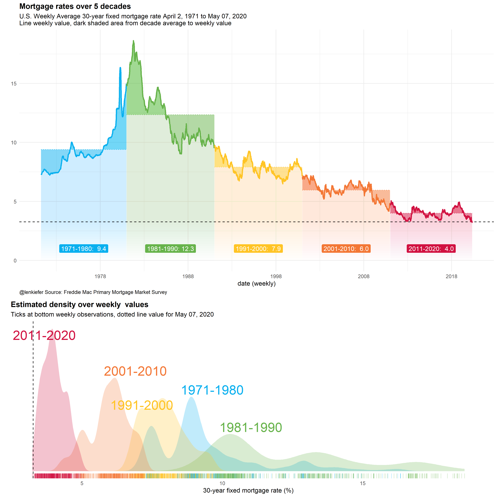
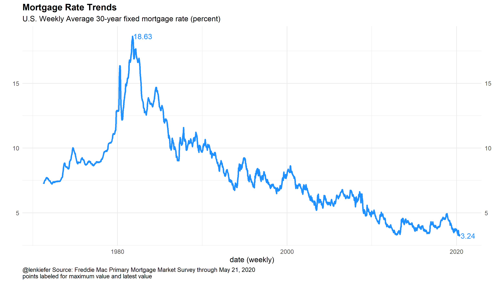
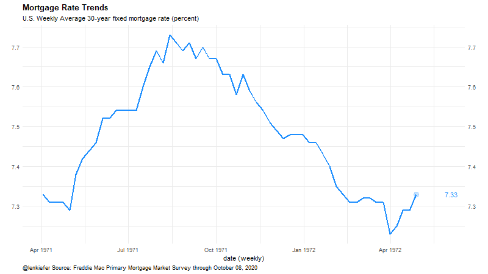

This week the Freddie Mac Primary Mortgage Market Survey reported a record low for the U.S. weekly average 30-year mortgage rate.
First some charts, then below I post R code.



R code
Load libraries
library(fredr)
library(tidyverse)
library(patchwork)
library(cowplot)
library(gganimate)
library(lubridate) # updated You’ll need a custom color scale (see below for code).
R code to wrangle data
data preparation code
source(paste0(mydir,"len_color_scales.R")) #custom color scale code copied below
fredr_set_key("YOURKEY")
df <-
fredr(series_id = "MORTGAGE30US",
observation_start = as.Date("1971-04-01")
) %>%
#mutate(decade=paste0(floor(year(date)/10),"0s"))%>%
mutate(decade=case_when(year(date)<1981~"1971-1980",
year(date)<1991~"1981-1990",
year(date)<2001~"1991-2000",
year(date)<2011~"2001-2010",
T~"2011-2020")) %>%
group_by(decade) %>%
# get decade average
mutate(vbar=mean(value)) %>% ungroup()
mydate <- format(max(df$date),"%B %d, %Y")
myxy2<- function(dd, in.df=df){
x<-filter(in.df,decade==dd)$value
outdf<- data.frame(
x=density(x)$x[which.max(density(x)$y)], #find maximum density (in y dimension)
y=max(density(x)$y,na.rm=T)
)
}
df.text <- data.frame(decade=unique(df$decade)) %>% mutate(xy=map(decade,myxy2)) %>% unnest(xy)
myr0 <- function(x, a=0.02){
geom_ribbon(alpha=a, color=NA, aes(ymin=0,ymax=min(x, value)))
}
myr <- function(x, a=0.02){
geom_ribbon(alpha=a, color=NA, aes(ymin=min(x, value )))
}
df_labels <- df %>% group_by(decade) %>% summarize(date=median(date),value=mean(value,na.rm=TRUE))Make plots
plot code
# Density + mortgage rate trend (colorful)
g.dens.plain <-
ggplot(data= df,
aes(x=value, fill=decade,color=decade))+
geom_density(alpha=0.25,color=NA)+
geom_rug(sides="b",alpha=0.25)+
theme_minimal()+
scale_y_continuous(breaks=NULL,sec.axis=dup_axis())+
theme(legend.position="none",
panel.grid.minor=element_blank(),
panel.grid.major=element_blank(),
plot.title=element_text(face="bold",hjust=0,size=rel(1.2)),
plot.caption=element_text(hjust=0))+
ggrepel::geom_text_repel(data=df.text,aes(label=decade, x=x,y=y),size=8)+
labs(x="30-year fixed mortgage rate (%)",
title="Estimated density over weekly values",y="",
subtitle=paste0("Ticks at bottom weekly observations, dotted line value for ",mydate))+
scale_color_mycol(palette="mixed")+
scale_fill_mycol(palette="mixed")+
geom_vline(aes(xintercept=last(value)),linetype=2)
g.line<-
ggplot(data=df ,
aes(x=date,y=value, ymax= value , fill=decade,color=decade))+
geom_line()+
geom_ribbon(alpha=0.5, color=NA, aes(ymin=vbar))+
map(c(0,pull(df,value) %>% last()) %>% pretty(12), myr, a=0.01)+
geom_hline(aes(yintercept=last(value)), linetype=2)+
geom_line(aes(y=vbar),linetype=3)+
geom_line(size=1.05)+
theme_minimal() +
geom_label(data=df_labels, aes(y=1,label=paste0(decade,": ",format(round(value,1),nsmall=1))),color="white")+
theme(legend.position="none",
plot.title=element_text(face="bold",size=rel(1.2)),
plot.caption=element_text(hjust=0))+
scale_x_date(date_breaks="10 years",date_labels="%Y")+
labs(x="date (weekly)",
y="", subtitle=paste0("U.S. Weekly Average 30-year fixed mortgage rate April 2, 1971 to ",
mydate,
"\nLine weekly value, dark shaded area from decade average to weekly value"),
title="Mortgage rates over 5 decades",
caption="@lenkiefer Source: Freddie Mac Primary Mortgage Market Survey") +
scale_color_mycol(palette="mixed")+
scale_fill_mycol(palette="mixed")
cowplot::plot_grid(g.line,g.dens.plain,ncol=1,rel_heights=c(3,2))
# Mortgage trends (static) line plot
df2 <- mutate(df,
id=row_number(),
dind=case_when(id<52~0,
value==max(value)~500,
value==min(value)~500,
T~1),
label=as.character(round(value,2)))
df2b <- filter(df2, dind>1) %>% mutate(dind=250)
df2 <- bind_rows(df2, df2b) %>%
arrange(date) %>%
mutate(ind=cumsum(dind))
g <-
ggplot(data=df2, aes(x=date,y=value,label=label))+
geom_line(color="dodgerblue",size=1.05)+
theme_minimal()+
scale_y_continuous(sec.axis=dup_axis())+
theme(legend.position="none",
plot.title=element_text(face="bold",hjust=0,size=rel(1.2)),
plot.caption=element_text(hjust=0))+
labs(x="date (weekly)", y="",
title="Mortgage Rate Trends",
subtitle="U.S. Weekly Average 30-year fixed mortgage rate (percent)",
caption=paste0("@lenkiefer Source: Freddie Mac Primary Mortgage Market Survey through ",mydate))
g+ geom_text(data=.%>% filter(value==max(value)|value==min(value)),color="dodgerblue",nudge_x=30,hjust=0)
# animated plot
a.mtg <- g+ geom_point(color="dodgerblue",size=4,alpha=0.25) +geom_text(color="dodgerblue",nudge_x=30,hjust=0)+
transition_reveal(ind)+view_follow()
animate(a.mtg,end_pause=25, nframes=350,fps=12,width=800,height=450)
save_animation(last_animation(), file=paste0(mydir,"mtg_trend.gif"))Custom color scales
# Function for colors ----
# adapted from https://drsimonj.svbtle.com/creating-corporate-colour-palettes-for-ggplot2
#####################################################################################
## Make Color Scale ---- ##
#####################################################################################
my_colors <- c(
"green" = rgb(103,180,75, maxColorValue = 256),
"green2" = rgb(147,198,44, maxColorValue = 256),
"lightblue" = rgb(9, 177,240, maxColorValue = 256),
"lightblue2" = rgb(173,216,230, maxColorValue = 256),
'blue' = "#00aedb",
'red' = "#d11141",
'orange' = "#f37735",
'yellow' = "#ffc425",
'gold' = "#FFD700",
'light grey' = "#cccccc",
'purple' = "#551A8B",
'dark grey' = "#8c8c8c")
my_cols <- function(...) {
cols <- c(...)
if (is.null(cols))
return (my_colors)
my_colors[cols]
}
my_palettes <- list(
`main` = my_cols("blue", "green", "yellow"),
`cool` = my_cols("blue", "green"),
`cool2hot` = my_cols("lightblue2","lightblue", "blue","green", "green2","yellow","gold", "orange", "red"),
`hot` = my_cols("yellow", "orange", "red"),
`mixed` = my_cols("lightblue", "green", "yellow", "orange", "red"),
`mixed2` = my_cols("lightblue2","lightblue", "green", "green2","yellow","gold", "orange", "red"),
`mixed3` = my_cols("lightblue2","lightblue", "green", "yellow","gold", "orange", "red"),
`mixed4` = my_cols("lightblue2","lightblue", "green", "green2","yellow","gold", "orange", "red","purple"),
`mixed5` = my_cols("lightblue","green", "green2","yellow","gold", "orange", "red","purple","blue"),
`mixed6` = my_cols("green", "gold", "orange", "red","purple","blue"),
`grey` = my_cols("light grey", "dark grey")
)
my_pal <- function(palette = "main", reverse = FALSE, ...) {
pal <- my_palettes[[palette]]
if (reverse) pal <- rev(pal)
colorRampPalette(pal, ...)
}
scale_color_mycol <- function(palette = "main", discrete = TRUE, reverse = FALSE, ...) {
pal <- my_pal(palette = palette, reverse = reverse)
if (discrete) {
discrete_scale("colour", paste0("my_", palette), palette = pal, ...)
} else {
scale_color_gradientn(colours = pal(256), ...)
}
}
scale_fill_mycol <- function(palette = "main", discrete = TRUE, reverse = FALSE, ...) {
pal <- my_pal(palette = palette, reverse = reverse)
if (discrete) {
discrete_scale("fill", paste0("my_", palette), palette = pal, ...)
} else {
scale_fill_gradientn(colours = pal(256), ...)
}
}